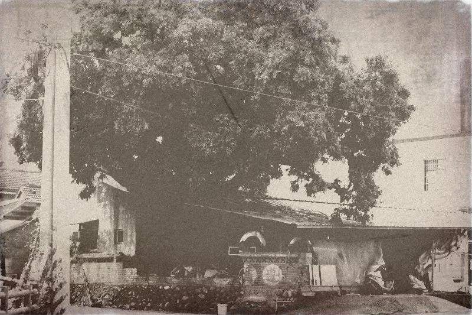

故事是甚麼｜換語者店小二
2017-09-06

大家好，我是老闆「那個誰」，人生苦短，不如聽個「故事」解解悶？
故事是甚麼？是一場你有機會參與的平行人生。
第一人稱、第二人稱還是第三人稱，全知還是不全知，都象徵著一場命運盛宴即將展開。主角將走去哪裡？女主角怎麼不太正？故事有故事的打算，你可以選擇涉入其中，當主角的跟班(喔不，大家都喜歡當主角)或直接粉墨登場，在出將入相的變化之間，體會如夢般無窮平行宇宙中的另一個人生。
想試試看？清晨黃昏的時候，挑一個你不認識的路，第一個黑暗轉角轉過去，到我們的柑仔店，找一個在店裡穿來走去，戴頭巾的傢伙就可以了。
故事是甚麼？是你，給我你的故事，我來告訴你你不知道的故事。